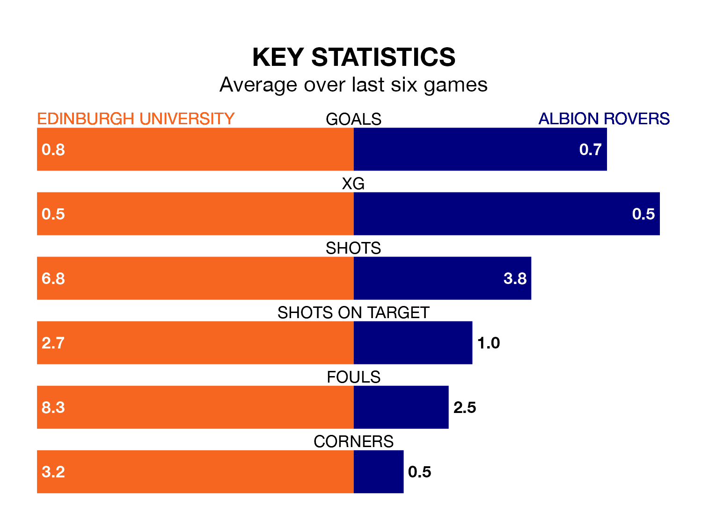

Edinburgh University host Albion Rovers in Saturday's match at East Peffermill looking to bounce back from defeat last time out in Highland and Lowland Football Leagues.
Edinburgh University, who sit zero in the league after 16 games, fell to a 4-0 home defeat to Hearts U21 on November 11.
They face an Albion side who picked up a win in their last match, a 2-1 victory against Edusport Academy, and who sit zero in the table.
With 11 goals in 16 games so far this season, Edinburgh University are the league's-16th-lowest scorers with 0.7 goals per game. And they are conceding more than average, letting in 63 goals at a rate of 3.9 per game.
Albion are also below average scorers, with 1.3 goals per game, compared to a league average of 1.7. They have conceded 1.0 goal per game.
The home side are in bad form in Highland and Lowland Football Leagues, with one win and five losses from their last six games.
With two wins and three draws over that period, Rovers' form is much better – they have taken nine points from 18, compared to Edinburgh University's three.
